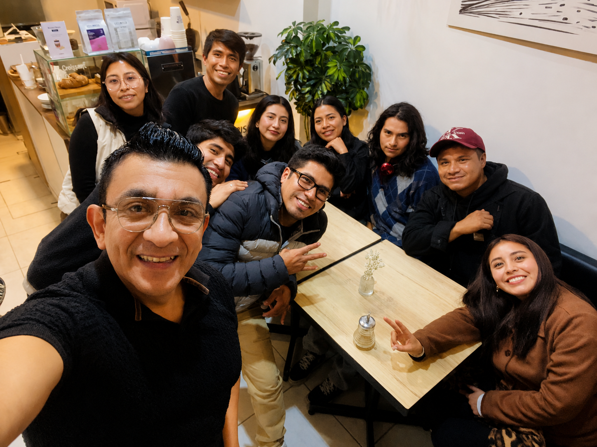
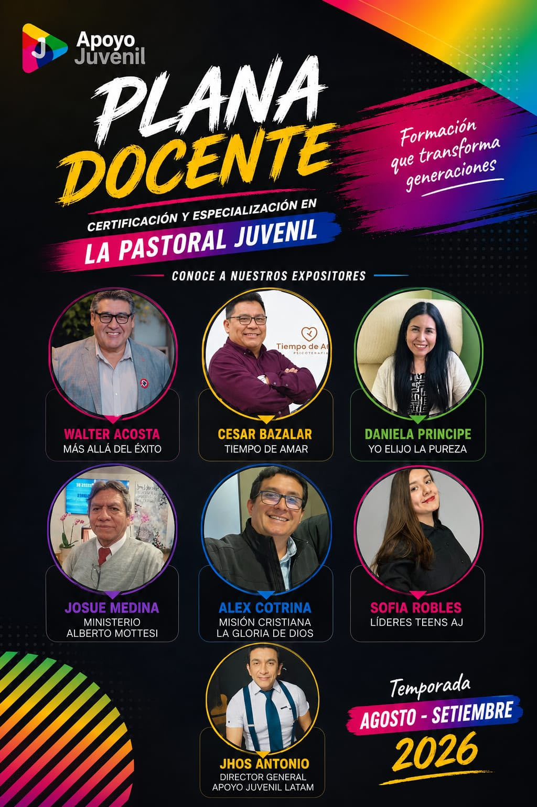

Aplicación inmediata
Contenido pensado para llevarlo directamente a tu iglesia, ministerio u organización juvenil.
Certificación y especialización en
Formación práctica para líderes que desean comprender, acompañar y transformar a las nuevas generaciones.

No se trata solo de conocer a los jóvenes, sino de aprender a conectar con ellos, acompañarlos y formar líderes con impacto.
Contenido pensado para llevarlo directamente a tu iglesia, ministerio u organización juvenil.
Aprende de líderes vinculados al trabajo juvenil, la formación y el acompañamiento de nuevas generaciones.
Temas relevantes para comprender los desafíos reales de adolescentes y jóvenes en 2026.
Cada encuentro aborda un reto concreto de la pastoral juvenil y te entrega herramientas para actuar con criterio, empatía y propósito.

Completa tus datos. Al finalizar el registro, te llevaremos automáticamente al grupo oficial de WhatsApp.
Tus datos se usarán únicamente para brindarte información sobre esta certificación.